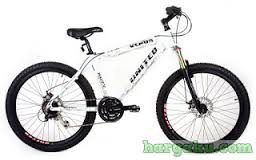

Freeride

Sepeda Freeride . untuk para pengedara sepeda yang
lebih ekstrim , dengan travel lebih serta kwalifikasi durabilitas untuk
heavy-duty yang cukup baik untuk berbagai medan liar dan pendaratan
pada medan kasar. Tepatnya dengan kecepatan rendah akan membantu anda
untuk mengatasi berbagai tikungan tajan dan jalur cukup sempit.Travel
dimulai pada 6 inchi (15 cm) dan akan berada diatasnya setela itu.
Beberapa pengendara sepeda Freeride biasanga menggunakan dual front
rings jadi hanya pedaling dari pada sekedar penekanan , untuk mencapai
puncak.